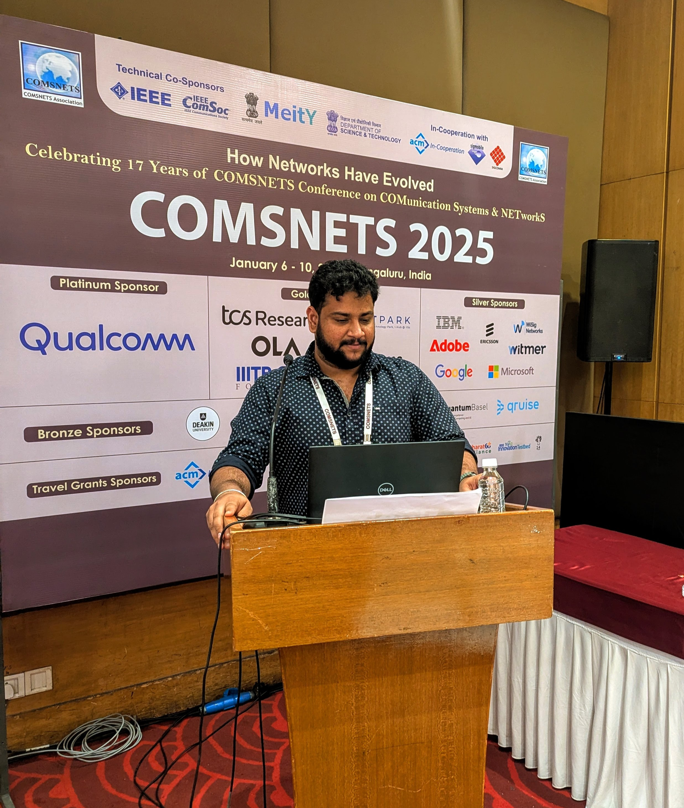

I’m thrilled to share exciting news! 🎉
Our research paper, "DACC-Comm: DNN-Powered Adaptive Compression and Flow Control for Robust Communication in Network-Constrained Environments," was accepted at COMSNETS 2025! 🚀
I had the incredible opportunity to co-present this work alongside my professor Dr. Anuradha Ravi, Ph.D at the COMSNETS 2025 conference in Bengaluru, India. We discussed how deep learning-driven adaptive compression can enhance communication efficiency in multi-agent robotic systems operating in constrained environments.
#COMSNETS2025 #MachineLearning #Networking #Research #Robotics #DeepLearning #AI #AdaptiveCompression #AcademicPublishing #UMBC